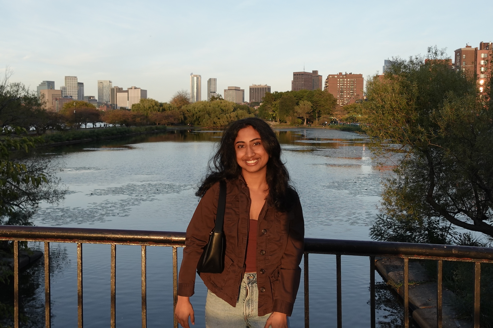

Bay Area, New York, etc.

I build machine learning systems for biological and clinical data — spatial transcriptomics, medical imaging, and drug-gene networks — with a focus on interpretability and real-world deployment. My current thesis work uses a Borzoi-based cross-attention model to predict spatial gene co-expression across mouse embryo development, in the De Vlaminck Lab at Cornell.
I'm a Systems Engineering MEng student on the Health Systems Engineering pathway at Cornell University, having completed my Bachelor's in Information Science, Systems, and Technology with Data Science and Behavioral Science concentrations at Cornell's College of Engineering. Previously, I worked at Harvard's Wyss Institute for Biologically Inspired Engineering under a DoD program on spatial transcriptomics and graph neural networks for drug discovery, and as a strategic solutions intern at P33 Chicago.
At Cornell DEBUT, a biomedical engineering project team, I'm the full team lead and manage 4 Research and Development subteams and team-wide operations. As a Research & Development Analyst, my team and I built a self-stabilizing cane for Parkinson's disease.
I'm originally from the Bay Area. Outside of work, I love music and exploring new coffee shops to log on Beli.